Chat
Approved application · approved logoEvery image below is an actual canonical PNG. Open an image for its full resolution. These are authored design scenes, not current-app browser captures.
Loading note sources
source-picker-loadingActions and implementation pointers
×
apps/web/src/components/assistant-ui/thread-components.tsxapps/web/src/components/assistant-ui/thread-sources.tsx

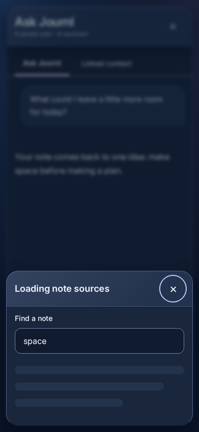
SHA256 eb1b3f4e392bd23054eabf0328693ae56b57392b1d10bff69c9adc1bc7451613

SHA256 623d25ddfd1eca2de50366ae7cea9fe0094631a00d379c69449f7204dc83dffd

SHA256 a97cbafc954725d69ea44c3cac101b5222b42fb97d78c5c6727303036235617e

SHA256 4bb3a43314b29fe7ad842763ef12abf85ccb46a141632979bae22807eb63acce
Sources unavailable
source-picker-errorActions and implementation pointers
× · Retry · Cancel
apps/web/src/components/assistant-ui/thread-components.tsxapps/web/src/components/assistant-ui/thread-sources.tsx

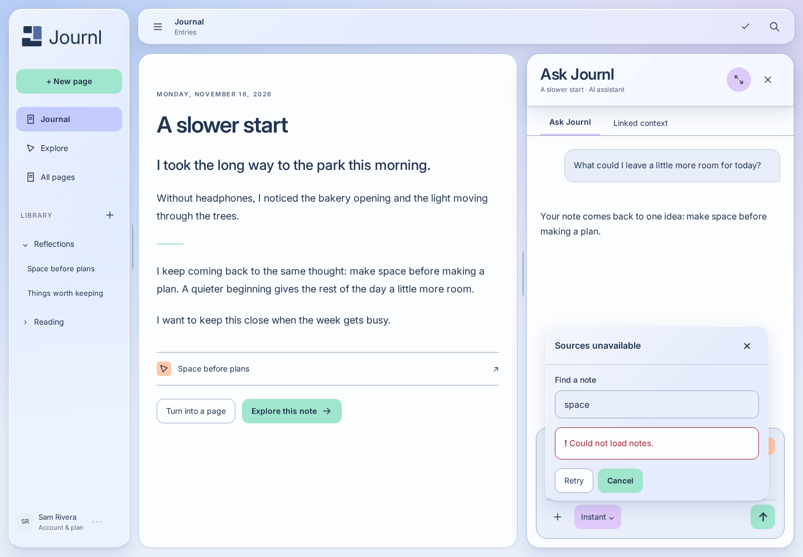
SHA256 8987f5a4ec4030bb16854d9a9f7e09eb0664213127eef7f3d85b15b4e783021b

SHA256 f3f87644fe6a6888396e1dbf0b809e64064006f609d3232774c81e2cc9e7cec2

SHA256 e7efbc10fd0d6e5c4b539ba7129b1b5efe2606fb06c0fc1c298b147cf517ee04

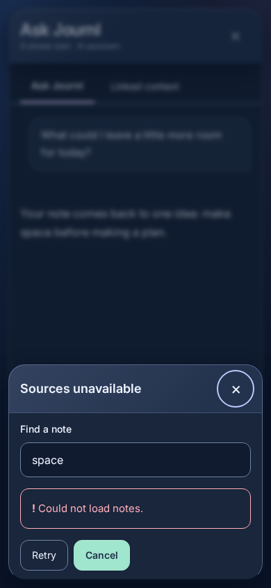
SHA256 de5adefd7df37a2fcd05ccd6db54ecd658181ed4c9cea9874a0197e3e69e2738
Edit your message
edit-messageActions and implementation pointers
+ New page · Journal · Explore · All pages · ⌄ · Reflections · › · Reading · Turn into a page · Explore this note · Ask Journl · Linked context · Cancel edit · Send edit · Instant ⌄ · ↑ · Entries · Timeline · Nov 16 · History · Close · Instant · Thinking
apps/web/src/components/assistant-ui/thread-components.tsxapps/web/src/components/assistant-ui/thread-sources.tsx

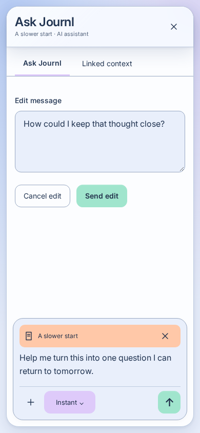
SHA256 e98b51ab8d3acb740d741e432a3086cb71bff6244502abffbe522c519c44cbed

SHA256 4952addc69c8779c27d79227f5c122f3fac65c339a2d9274f3d6375e0eebe7c7

SHA256 6a1c9743c2a6485097efaae7280875b72c3e50ef22b06b8727e6729d12df3786

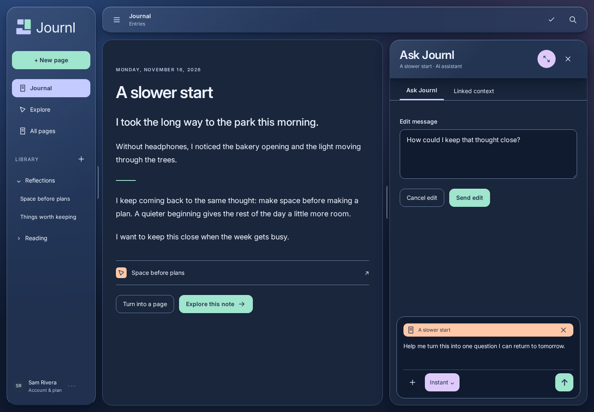
SHA256 bdf98439d95418fc2f40b83c82e47a16250a8773155d33ed532e361511828591
Message unchanged
edit-cancelActions and implementation pointers
+ New page · Journal · Explore · All pages · ⌄ · Reflections · › · Reading · Turn into a page · Explore this note · Ask Journl · Linked context · Copy · Retry · Instant ⌄ · ↑ · Entries · Timeline · Nov 16 · History · Close · Instant · Thinking
apps/web/src/components/assistant-ui/thread-components.tsxapps/web/src/components/assistant-ui/thread-sources.tsx

SHA256 01b8ca320e119112ec60d3093fd2b581a805c8785dc8c7bae9a2308549806913

SHA256 4d057a711752932db563d1f1bdcf7ddd8b17e47166bc870a05909b668b20acad

SHA256 cec02de6f3965095177a739c1c436641e9e253b03442ea161a36022e5ee66342

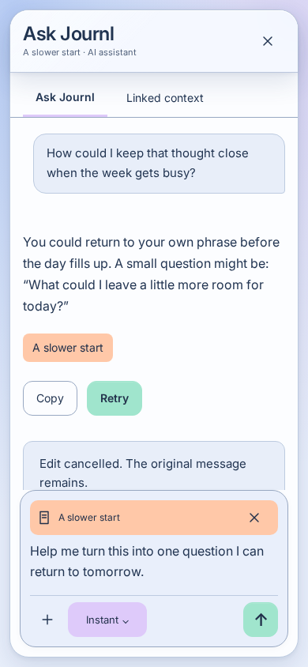
SHA256 59fc71d856a0ea14f7bfec1e3460f8adcbf71915b3bcb1db8906f6a4f89f7899

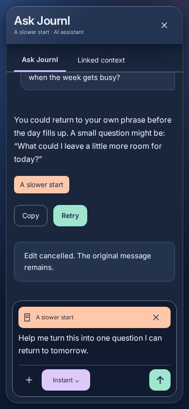
SHA256 6364e003f098a151a59e05bd0017ed8148589667de7cf04ba6f989a0a23f2ef1

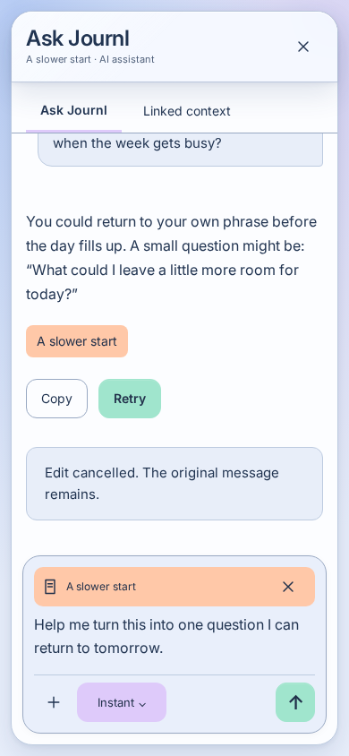
SHA256 beb32beca26ba994b3ef9c903913839a3924e23bca5e4ee8d91b53166711988f
Reasoning
reasoning-optionsActions and implementation pointers
× · Instant — selected · Thinking
apps/web/src/components/assistant-ui/thread-components.tsxapps/web/src/components/assistant-ui/thread-sources.tsx

SHA256 052d37d1fb1d7c07891506648bbde7d9be5cf735b7d0578197c862ea1e71e37c

SHA256 b4cadf8e5a4fab48e359c59136ef4bd58af625102f469dfe37c0562dca370dc1

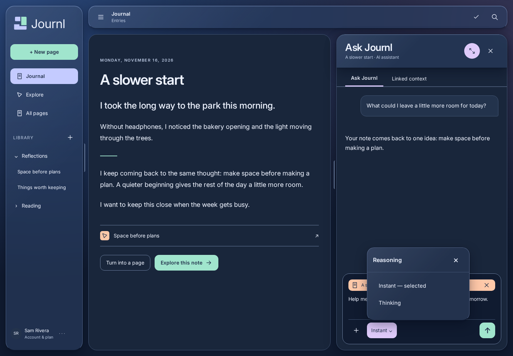
SHA256 82a83831e4f87d631f0d55ea675d1b97c4c9b46ce32bcd84abbd83642d2ecddb

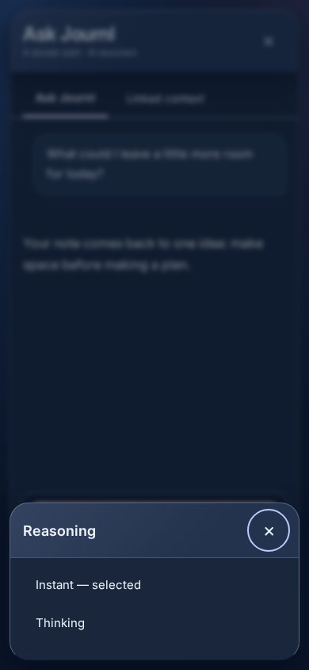
SHA256 0687e4d57d0904389bd8f62410c0a6f7c89d0c403e5cbac8b199b3cb08591ae1
Ask Journl
chat-streamingActions and implementation pointers
+ New page · Journal · Explore · All pages · ⌄ · Reflections · › · Reading · Turn into a page · Explore this note · Ask Journl · Linked context · Copy · Retry · Instant ⌄ · Entries · Timeline · Nov 16 · History · Close · Instant · Thinking
apps/web/src/components/assistant-ui/thread-components.tsxapps/web/src/components/assistant-ui/thread-sources.tsx

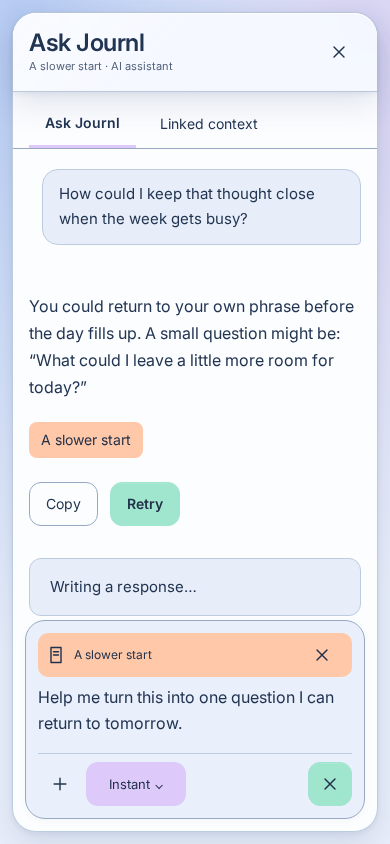
SHA256 72be0cdb670800d650b36ea11bfbd9c81352c53a158fcfb2ab813d94a2b8dc25

SHA256 006e5045989c42fc3ada2e8e3f1955dfd31458f8acb95462c4e46c2c68f688cc

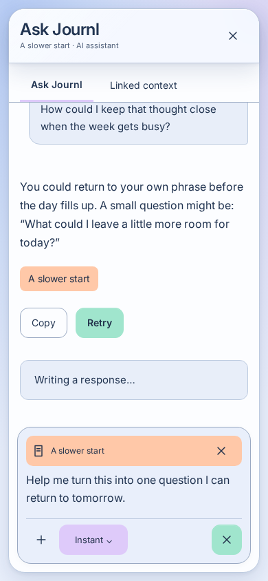
SHA256 5f5c1a5e4ea6eb22cec9de8e677e057cda25b1a0788803c3232a10dbf3e969f7

SHA256 8a24b3c7d2f4f952f847cbae6928902e5af8bc537fe4ff7af4f1c180aa505129

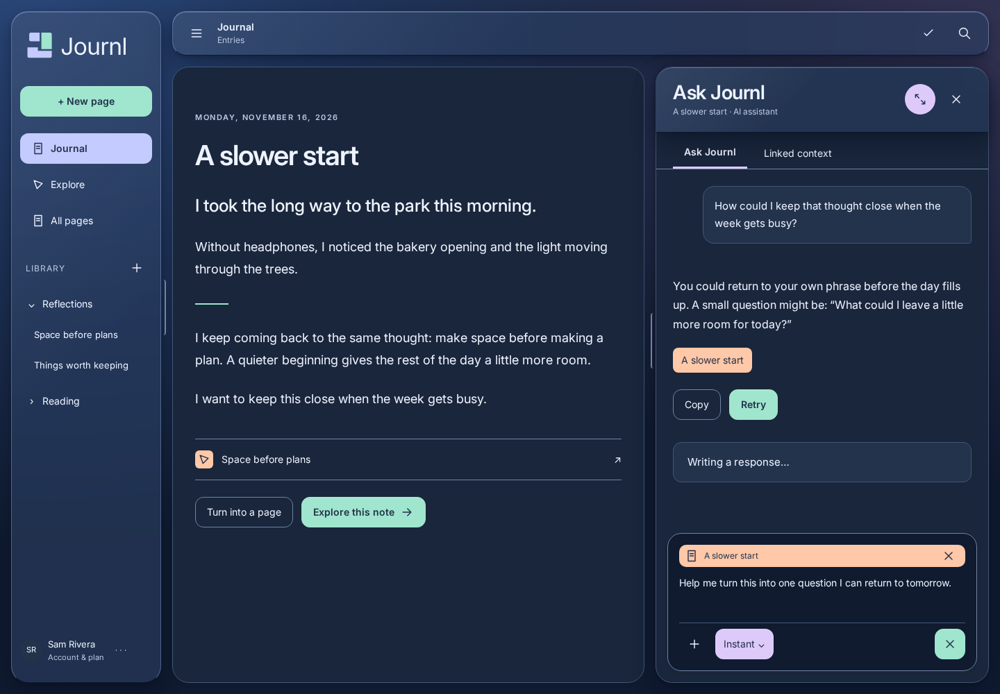
SHA256 f6174ea930b598ed9d3fb2d493f2ca095ddccce94d28418cbfb59dba0720c779

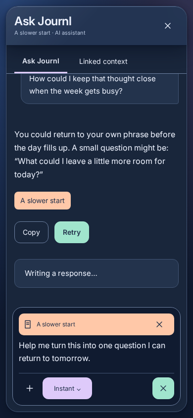
SHA256 3502c390d9e15e9adb1b856d9a4f9157f1dc0403b22c876198087361726d3024
Thinking
chat-thinkingActions and implementation pointers
+ New page · Journal · Explore · All pages · ⌄ · Reflections · › · Reading · Turn into a page · Explore this note · Ask Journl · Linked context · Thinking · Show details · Instant ⌄ · Entries · Timeline · Nov 16 · History · Close · Instant · Thinking
apps/web/src/components/assistant-ui/thread-components.tsxapps/web/src/components/assistant-ui/thread-sources.tsx

SHA256 18a38ce9a0db7f6f04a991595f5d2eaa30ae023dc39c41c6f95eb38f7b064c1f

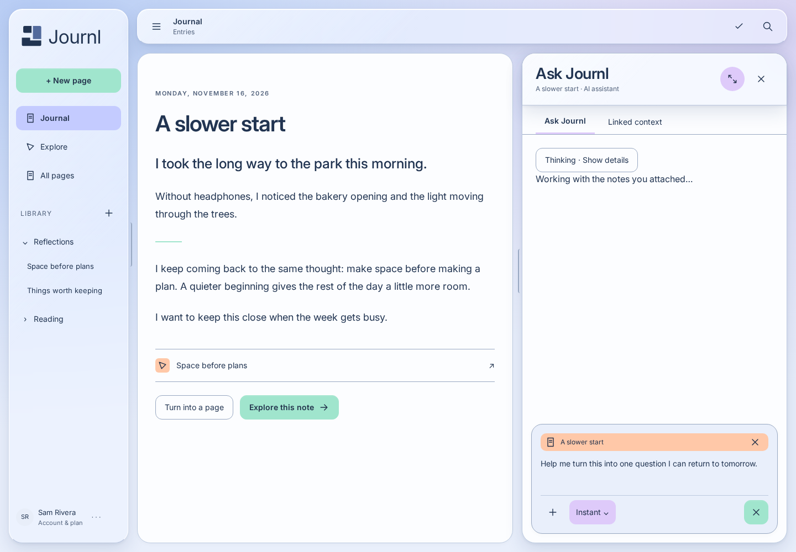
SHA256 47821b3a1db8057742ed17fdaab67e74157904c37cf0f9d549a105e774cba47c

SHA256 d3d5fd2e2380e6607b9e58a2326024d5bf6421a99bdedef87505f2003c7100eb

SHA256 5fe31b7886b612bed3633e82eefe1f7c7223b181a0fb80057c9528b21f1709b6
Response details
chat-thinking-completeActions and implementation pointers
+ New page · Journal · Explore · All pages · ⌄ · Reflections · › · Reading · Turn into a page · Explore this note · Ask Journl · Linked context · Results · Hide details · Copy · Retry · Instant ⌄ · ↑ · Entries · Timeline · Nov 16 · History · Close · Instant · Thinking
apps/web/src/components/assistant-ui/thread-components.tsxapps/web/src/components/assistant-ui/thread-sources.tsx

SHA256 f8e9e61987cb9d9bd2abd23f37a70a3708acba8e928573a770d6338859927956

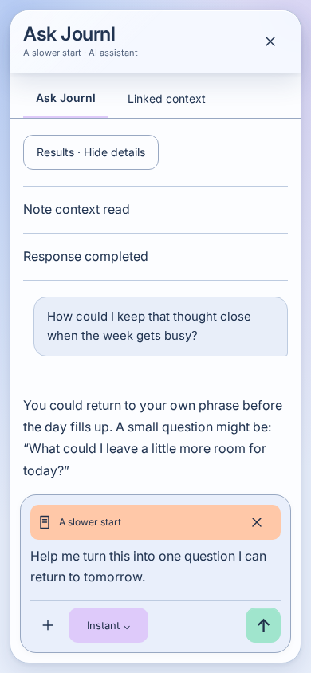
SHA256 2555ad10575fcfef64dc6c8c88fbafb418e393134116940076cf6f70b1033173

SHA256 213586bffe344b75f2bf303174d074a7553b7d451bc547db51d4517d3584553b

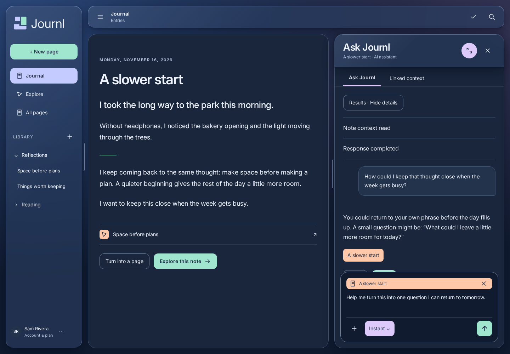
SHA256 ba9590ae928edd0cf83ddfc72829e32be6e65d2a5c90d053d79a4348da589f34

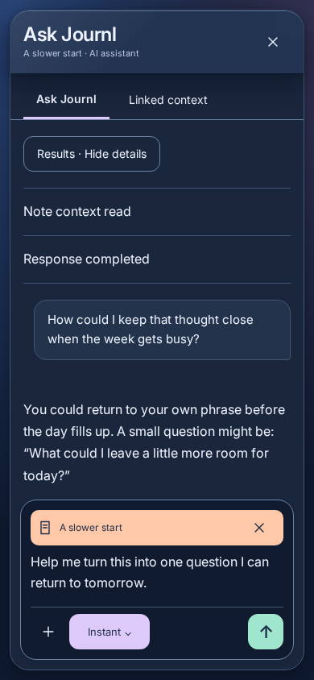
SHA256 560d7197d31095626a6d2e70c23f45ef933a985ce7ef4032e08318bbe36cd60b

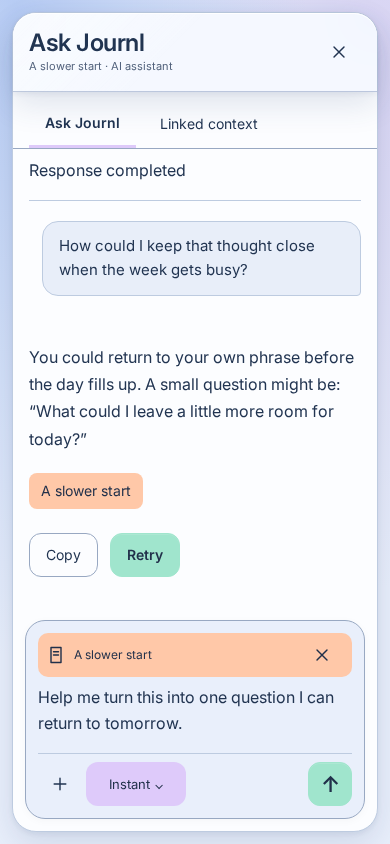
SHA256 3eeea05397be836a516832725048c1b787d55d5c4f1e99015f642f75fdcb059d

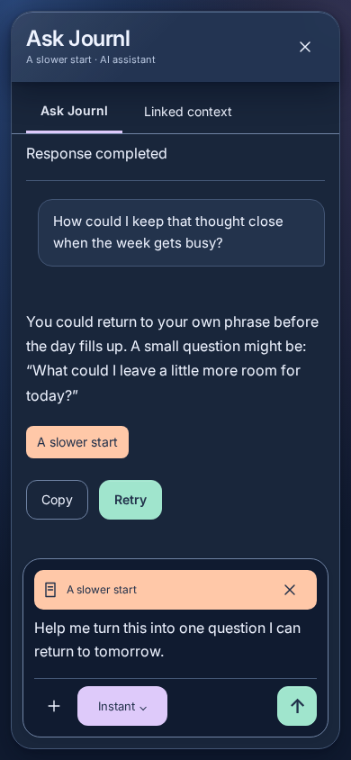
SHA256 eb42456b4a0358115aeff430b71fe265278fa7bd07bd8a979090cc389cc36802

SHA256 a585e93257529dceea0b7c9b0aeb10d11e8e01ed9494630888fa1508b24f007d
Working with note context
chat-tool-runningActions and implementation pointers
+ New page · Journal · Explore · All pages · ⌄ · Reflections · › · Reading · Turn into a page · Explore this note · Ask Journl · Linked context · Show details · Instant ⌄ · Entries · Timeline · Nov 16 · History · Close · Instant · Thinking
apps/web/src/components/assistant-ui/thread-components.tsxapps/web/src/components/assistant-ui/thread-sources.tsx

SHA256 13427e235b598454a013953d7b7d15ded8ad19e0117ed162c7f31a986f9668c1

SHA256 7ea85b7ebc2f1bc0e4e7968cd07b4cbe3efb7733bd31853329a7dca9b46c3794

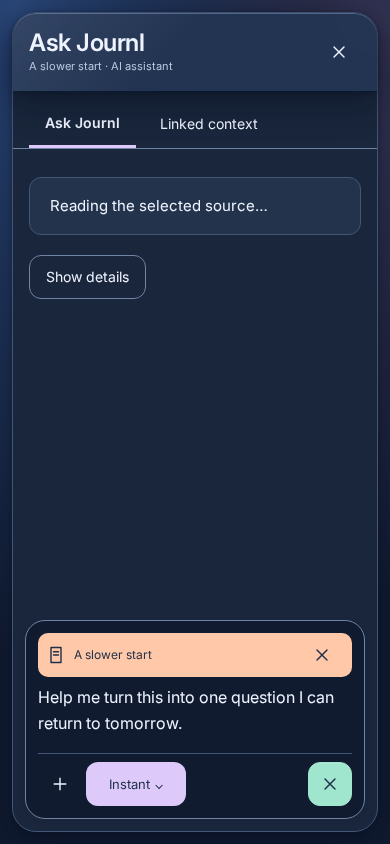
SHA256 4692a31612ca79592cb2a0ab4349bab24cd527b6f732dfad708996b2310b14b5

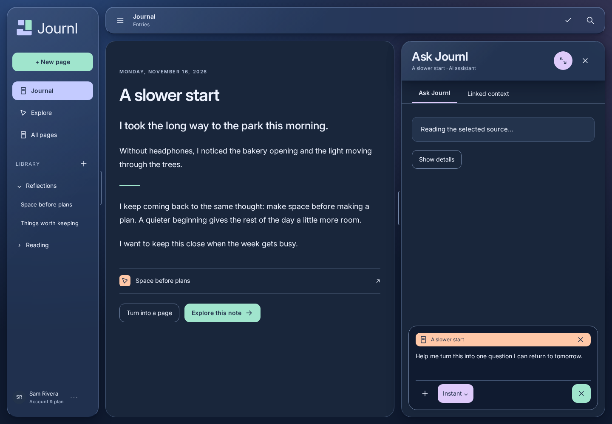
SHA256 f30847d3c037ff552247d30f20772db51e315816dbb7b3cb74965f07a741cdb8
Source action failed
chat-tool-errorActions and implementation pointers
+ New page · Journal · Explore · All pages · ⌄ · Reflections · › · Reading · Turn into a page · Explore this note · Ask Journl · Linked context · Show details · Retry · Instant ⌄ · ↑ · Entries · Timeline · Nov 16 · History · Close · Instant · Thinking
apps/web/src/components/assistant-ui/thread-components.tsxapps/web/src/components/assistant-ui/thread-sources.tsx

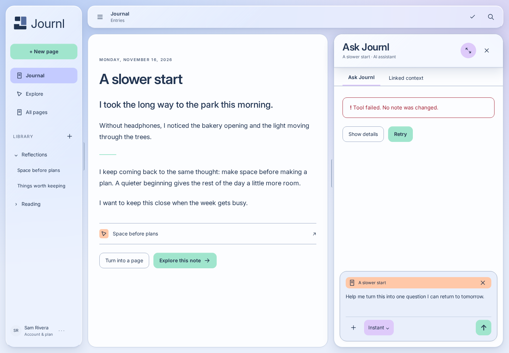
SHA256 2c399c21f0dee328c6867f732662e79e7e96dfd19fafb668a8d0404f1b8b80b7

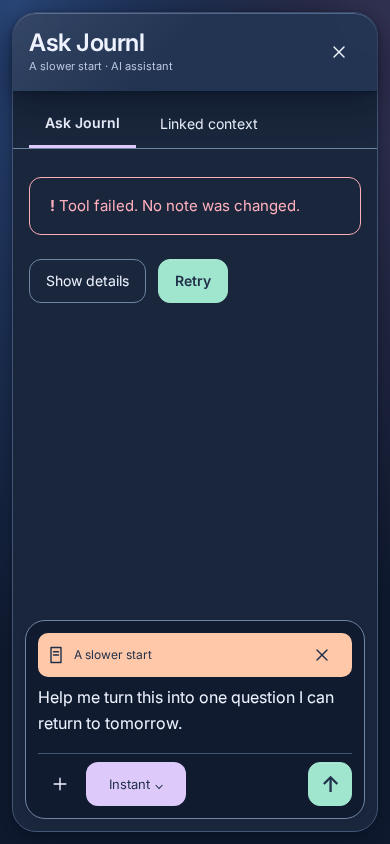
SHA256 2ef16150e28c748398b22795d096a037c26b99a3d87e69b0a92f650319765cf4

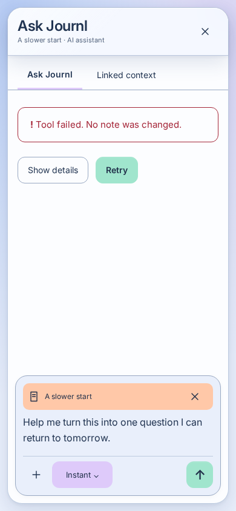
SHA256 f99dea3d2331b689710af835a7bed3f3d449441a2064358159b07b6afcf95e84

SHA256 bb40d336d3a362ead87291332dc16876f4f41ed3d6b2265b63be8519ec3b8b15